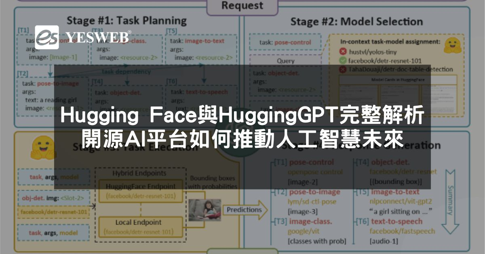
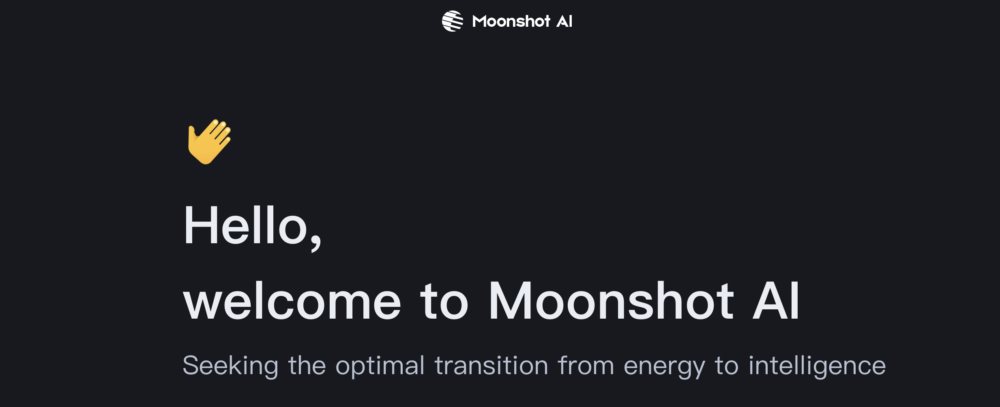
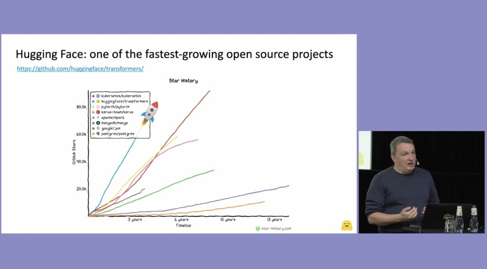
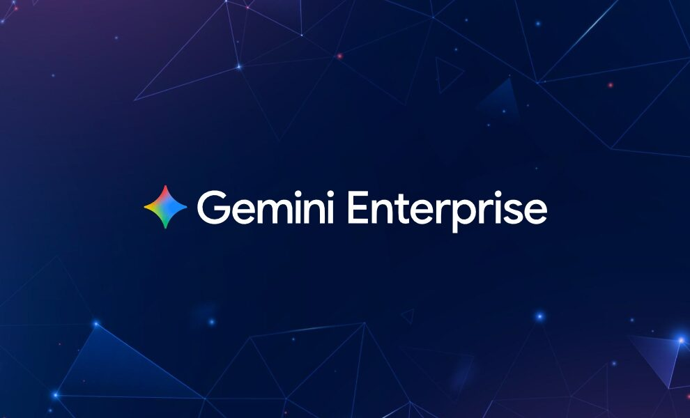
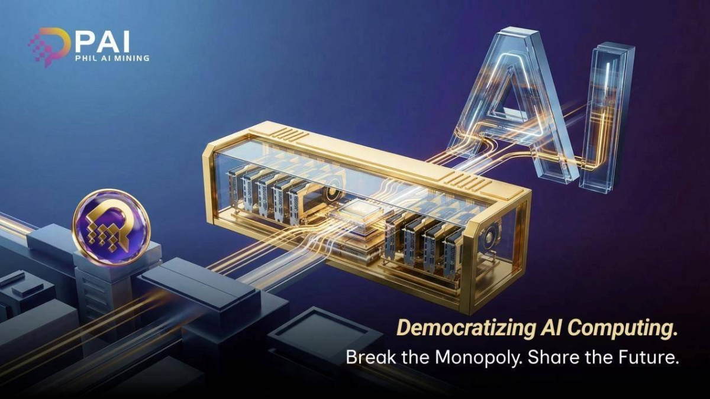
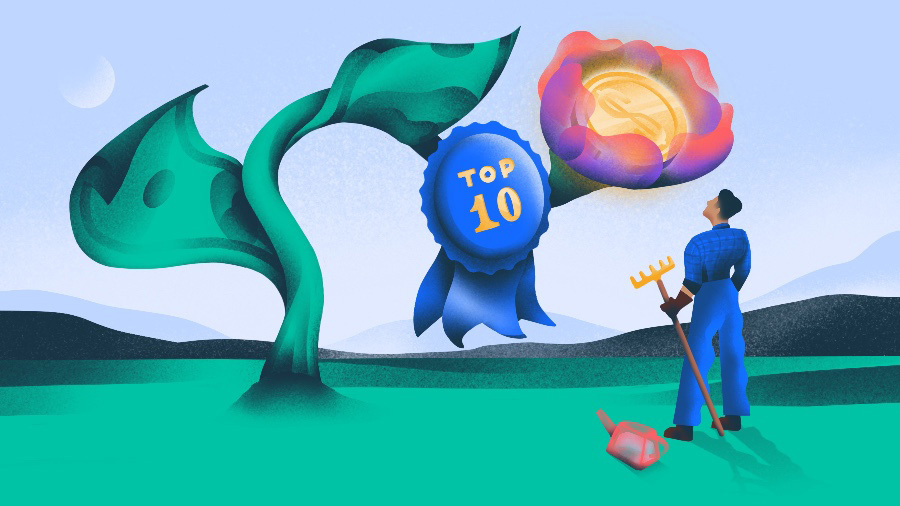
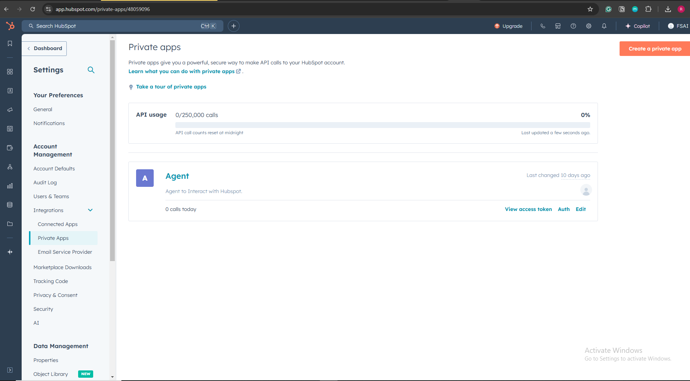

Janet 快车箱
AI Daily Briefing
2026-07-27
VOL 300
读者，早。
开源、云服务、消费硬件和销售工具各走各的路，却都在逼同一个现实：AI 不再只比参数和榜单，它开始进入采购、岗位、区域和安全表单。对创作者和中小团队来说，这不是追热点的一天，而是检查自己工具链有没有落到外部平台手里的一天。

TechCrunch 在 7 月 26 日报道，OpenAI 为新的开放模型相关项目与 Hugging Face 协作，焦点不是简单上架一个权重文件，而是让模型、评测、分发和开发者入口一起跑起来。报道把这个动作放在开放模型竞争里看：闭源公司要重新进入开源开发者的日常工具链，光靠品牌已经不够。

7 月 26 日，多家 AI 聚合和行业媒体继续追踪 Moonshot/Kimi K3 的开放权重讨论。争议集中在两点：模型能力和价格是否足以挑战美国头部模型，以及开放许可证、训练数据来源和商业使用边界是否讲得足够清楚。对中国模型出海来说，这类争议会直接影响海外开发者敢不敢接入。
TechCrunch 在 7 月 25 日更新 2026 年科技裁员清单，列出多家公司明确提到 AI、自动化或效率重组；窗口内该清单继续被讨论，Monday.com 等 SaaS 公司被放进同一张表里。它不是单家公司新闻，而是一个人力市场信号：AI 已经从投资人 PPT 走进组织缩编叙事。
7 月 26 日，围绕 Apple AI 智能眼镜的报道继续把隐私当作核心卖点：设备如果要长期观察环境，就必须在本地处理、云端同步和提示告知之间做取舍。相比普通手机助手，眼镜的问题更尖锐，因为摄像头、麦克风和 AI 推理会贴着人的生活场景走。
Al Jazeera 在 7 月 26 日报道 AI kill switch 相关政策争议，讨论重点是政府和企业是否应要求高风险 AI 系统具备紧急停机、人工接管和事故追责机制。支持者把它当作公共安全阀，反对者担心规则过粗会压住开源和小团队创新。

Kimi K3 的讨论在 7 月 26 日继续发酵，核心卖点是开放权重、长上下文和低调用成本。它被拿来和美国闭源模型以及国内其他开源模型比较，真正吸引海外开发者的不是中文叙事，而是能否用更低预算跑复杂推理、代码和检索任务。

Google Cloud release notes 在 7 月 26 日更新 Vertex AI / Gemini 相关可用性信息，Gemini 3.6 Flash 被写进更多区域和服务入口。对企业客户来说，模型名之外更关键的是区域可用、数据驻留、延迟和账单口径，因为这些决定它能不能进生产系统。

Google Cloud 的 7 月 26 日更新把 Claude Opus 5 相关可用性放进 Model Garden 语境。第三方模型进入云厂商模型目录，意味着企业可以在同一套身份、计费和数据控制框架下比较 Anthropic、Google 和其他供应商，而不是每接一个模型就重搭一套采购流程。

OpenAI 与 Hugging Face 的协作报道，让开放模型分发入口重新被讨论。模型文件本身只是第一层，后面还有权重托管、社区反馈、推理端点、评测榜单、示例代码和安全报告。谁能把这些环节做顺，谁就更容易被开发者默认采用。

Google Cloud 在 7 月 26 日的 release notes 中继续更新 Google SecOps 与 Gemini 相关能力。安全场景里的 AI 重点不是会不会聊天，而是能否整理告警、生成调查线索、解释规则命中原因，并把分析留在安全团队原有控制台里。

7 月 26 日，Gemini Enterprise / Google Cloud 相关更新继续强调企业级上下文和记忆能力。对工作流产品来说，记忆不是聊天历史那么简单，而是能否把权限、项目材料、用户偏好和组织知识按边界调用。
Google Workspace 相关更新在 7 月 26 日继续把 Gemini 放进会议、日历和协作文档场景。自动纪要、待办提取和上下文提醒正在变成办公套件标配，竞争点从能否生成文字转向能否准确理解组织关系和会议语境。
7 月 26 日，围绕 YouTube 与 AI 内容收益的讨论继续发酵。平台一边用 AI 帮创作者剪辑、配音和生成素材，一边也要处理低质搬运、深度伪造和广告主安全。AI 内容不是不能赚钱，而是会把审核成本和版权边界一起推高。

科技裁员清单把 AI 和 SaaS 组织调整放在同一张表里，给投资人一个更清楚的信号：AI 投资回报正在被要求从故事变成利润表。公司会先用自动化叙事解释岗位减少，再用剩下的人验证系统是否真能扛住业务。

7 月 26 日，美国围绕开放 AI 模型的产业游说继续升温。支持开放的一方强调创新、透明和国际竞争，主张限制的一方强调生物安全、网络攻击和滥用门槛。对投资市场来说，监管口径会直接改变开源模型公司的估值方式。

7 月 26 日的 AI 创业融资报道继续显示一个倾向：资金更愿意流向基础设施、安全、开发者工具和垂直工作流，而不是单纯套壳聊天产品。投资人开始要求团队解释训练成本、获客路径和是否能进入客户现有系统。

7 月 26 日，HubSpot Agent Hub 相关讨论继续指向一个产品趋势：销售、客服和营销工具不再只把 AI 当写作按钮，而是把它包装成可配置的业务 Agent。用户关心的不是一句回复写得多顺，而是它能否拿到正确 CRM 数据、触发动作并留下可追踪结果。